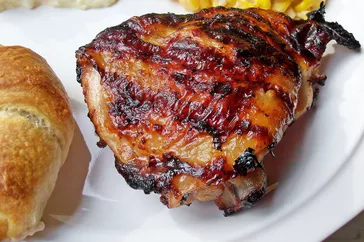

Roast Chicken with Lemon and Herbs

Description
This recipe creates a flavorful and juicy roast chicken with a simple lemon and herb marinade.
Ingredients
- 1 whole chicken (3-4 pounds)
- 2 lemons, 1 halved and 1 juiced
- 2 tablespoons olive oil
- 4 cloves garlic, minced
- 1 teaspoon dried thyme
- 1/2 teaspoon dried rosemary
- Salt and freshly ground black pepper
- 1 onion, quartered (optional)
- 2 celery stalks, chopped (optional)
Steps
- Prepare the Marinade: In a bowl, whisk together olive oil, lemon juice, minced garlic, thyme, rosemary, salt, and pepper.
- Marinate the Chicken: Pat the chicken dry with paper towels. Place the chicken in a large baking dish. Pour the marinade over the chicken, making sure to coat it evenly. Rub the marinade under the skin of the chicken (optional, for extra flavor). Cover the dish with plastic wrap and refrigerate for at least 30 minutes, or up to overnight for deeper flavor.
- Preheat the Oven: Preheat your oven to 425°F (220°C).
- Roast the Chicken: Place the halved lemon and any desired vegetables (onion, celery) around the chicken in the baking dish. Season the cavity of the chicken with salt and pepper (optional). Transfer the baking dish, uncovered, to the preheated oven. Roast for 1 hour and 15 minutes to 1 hour 30 minutes, or until the internal temperature of the thickest part of the thigh reaches 165°F (74°C). Baste the chicken with pan juices occasionally during roasting for extra flavor.
- Rest and Serve: Remove the chicken from the oven and let it rest for at least 15 minutes before carving. This allows the juices to redistribute throughout the meat, resulting in a more tender chicken. Carve the chicken and serve with roasted vegetables and pan drippings.